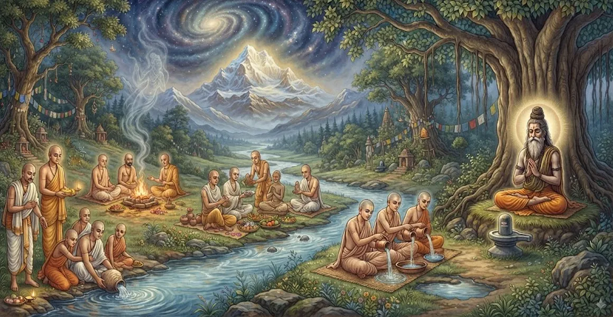

Rules for Duties and Rites After an Ascetic's Passing
The twenty-first chapter of the Kailasa Samhita outlines the sacred funeral, burial, and memorial rites performed upon the departure of an advanced renunciate.
Sage Suta details the protocols for honoring a liberated soul, emphasizing interment in Samadhi rather than conventional cremation.
This chapter provides essential guidance for disciples fulfilling their final devotional duties to their spiritual master.
Chapter 21 Highlights
Samadhi Interment
Explores the sacred tradition of burying liberated ascetics in meditative posture.
Final Rites
Outlines the sacred rituals and mantra invocations performed at departure.
Sacred Offerings
Details the application of holy ash, rudraksha, and sacred water oblations.
Disciple Duties
Defines the responsibilities of surviving disciples in honoring the master.
Shrine Consecration
Shows how the resting place becomes a site of ongoing spiritual inspiration.
Transition to Eleventh Day
Prepares the seeker for the memorial rites explored in Chapter 22.
Core Topics in This Chapter
The Transcendent Nature of Departure
Sage Suta explains that when an advanced ascetic who has merged their consciousness in Lord Shiva departs, it is not a mere death but a conscious absorption into the divine.
Therefore, the funerary rites reflect reverence, celebration of liberation, and peaceful return to the source.
Protocols for Samadhi Interment
Unlike ordinary mortals who undergo cremation, realized ascetics are placed in a seated meditative posture (Padmasana) within a sacred pit.
This posture preserves the alignment of vital energies and honors their lifetime of yogic practice.
Sacred Bathing and Anointing Rites
Before placement in Samadhi, the physical form is washed with consecrated water, smeared with holy ash (Bhasma), and adorned with rudraksha beads.
Every action is accompanied by powerful Vedic and Puranic chants dedicated to Lord Shiva.
Mantras and Final Invocations
Disciples chant sacred formulas into the ears of the departed master, reaffirming the unity of the individual soul with supreme Brahman.
These mantras guide the subtle consciousness smoothly across the threshold of worlds.
Establishment of the Memorial Shrine
A sacred shrine or Shiva Linga is established directly over the Samadhi pit, transforming the burial site into a place of active pilgrimage and worship.
Devotees continue to receive spiritual grace by meditating at the master's resting place.
Guidelines for Disciples and Mourners
Mourning for a liberated ascetic is tempered by spiritual understanding; grief is replaced by remembrance, gratitude, and continued dedication to the teachings.
Disciples uphold purity and serenity as they complete the transitional rites.
Transition to Chapter 22
Having established the funeral and Samadhi protocols in Chapter 21, Sage Suta introduces Chapter 22, 'The Eleventh-Day Rites for Ascetics'.
Chapter 22 details the specific memorial ceremonies and offerings performed on the eleventh day following an ascetic's passing.
Key Teachings of Chapter 21
Conscious Absorption
The passing of a realized master is a joyous merging into supreme Shiva consciousness.
Samadhi Tradition
Ascetics are interred in seated posture rather than subjected to cremation.
Sacred Anointing
Bhasma and rudraksha adorn the physical form as symbols of liberation.
Shrine Worship
Memorial shrines become eternal beacons of grace and spiritual guidance.
Transcendent Grief
Mourning is transformed into deep gratitude and dedication to truth.
Eleventh-Day Rites
Prepares the seeker for the memorial ceremonies explored in Chapter 22.
Spiritual Reflection
For the true yogi, physical death is merely dropping a garment. The Samadhi shrine stands not as a monument to loss, but as a living testament to the victory of spirit over matter and the eternal presence of the master's grace.
Living the Message of Chapter 21
Honor the legacy of enlightened masters with profound reverence, keeping their teachings alive in your daily actions and meditations.
Approach the transitions of life with the steady equanimity and supreme devotion taught in the sacred texts.
Let the memory of illumined souls inspire your own journey toward liberation in Shiva.
Key Spiritual Concepts
The sacred protocols and interment rules for realized ascetics.
Placing the departed master in a meditative sitting posture.
Anointing the physical form with sacred ash and rudraksha beads.
The establishment of the memorial shrine and Shiva Linga over the resting place.
The transcendent state of spiritual understanding that replaces worldly grief.
The subsequent transition toward eleventh-day memorial rites in Chapter 22.
Chapter Summary
Kailasa Samhita Chapter 21 presents Rules for Duties and Rites After an Ascetic's Passing. Detailing the transcendent nature of departure, Samadhi interment protocols, sacred bathing and anointing rites, memorial shrine establishment, and transcendent grief, this chapter guides disciples in honoring liberated masters. It sets the stage for Chapter 22, 'The Eleventh-Day Rites for Ascetics', exploring ongoing memorial ceremonies.
Frequently Asked Questions
1. What is the primary subject of Kailasa Samhita Chapter 21?
Chapter 21 outlines the sacred funeral, burial, and memorial rites performed after the passing of an advanced ascetic or renunciate.
2. How do funeral rites for an ascetic differ from ordinary rites?
Advanced ascetics who have merged their minds in Shiva are typically interred in a sacred sitting posture (Samadhi) rather than cremated, reflecting their liberated state.
3. What mantras and offerings accompany the ascetic's passing?
Sacred Shiva mantras, holy ash (Bhasma), and rudraksha beads are consecrated along with the departed soul's transition back to divine source.
4. How does Chapter 21 connect with the preceding chapter?
While Chapter 20 covers daily bodily purity and hair-cutting, Chapter 21 completes the cycle of ascetic life by detailing final departure protocols.
5. What is the significance of the memorial shrine for an ascetic?
The resting place or Samadhi shrine serves as a focal point of ongoing spiritual inspiration and reverence for disciples.
6. What is the next chapter for navigation after Chapter 21?
The next chapter for navigation is Chapter 22, titled 'The Eleventh-Day Rites for Ascetics'.
“When the realized soul departs, it merges into Shiva like a river into the ocean. The Samadhi shrine remains as a sanctuary of eternal peace and grace.”
Continue Through Kailasa Samhita
Chapter 21 details Rules for Duties and Rites After an Ascetic's Passing. Continue to Chapter 22, The Eleventh-Day Rites for Ascetics.